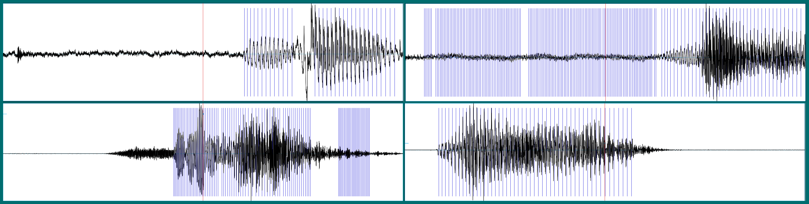
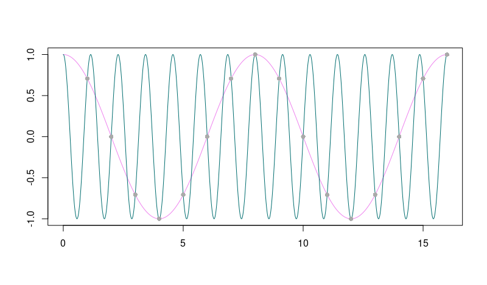
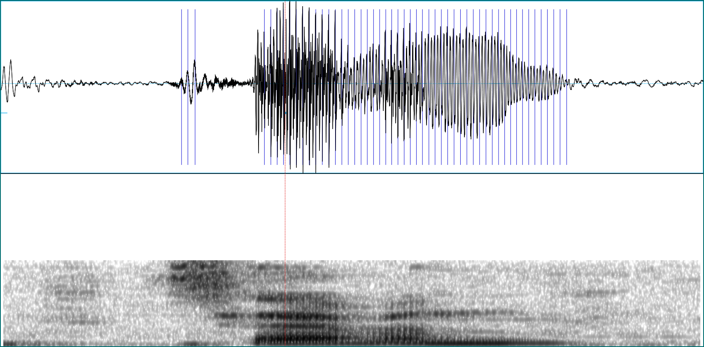
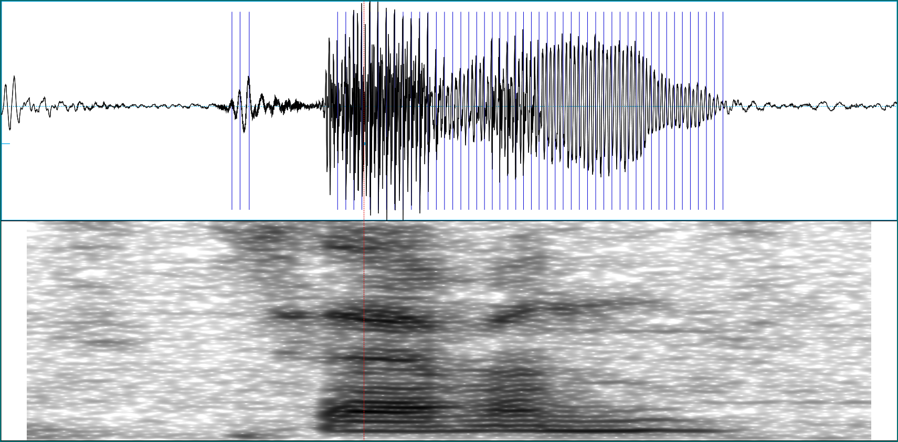

About half a year ago, this blog featured a post, written by Daniel Falbel, on how to use Keras to classify pieces of spoken language. The article got a lot of attention and not surprisingly, questions arose how to apply that code to different datasets. We’ll take this as a motivation to explore in more depth the preprocessing done in that post: If we know why the input to the network looks the way it looks, we will be able to modify the model specification appropriately if need be.
In case you have a background in speech recognition, or even general signal processing, for you the introductory part of this post will probably not contain much news. However, you might still be interested in the code part, which shows how to do things like creating spectrograms with current versions of TensorFlow.1 If you don’t have that background, we’re inviting you on a (hopefully) fascinating journey, slightly touching on one of the greater mysteries of this universe.2
We’ll use the same dataset as Daniel did in his post, that is, version 1 of the Google speech commands dataset(Warden 2018) The dataset consists of ~ 65,000 WAV files, of length one second or less. Each file is a recording of one of thirty words, uttered by different speakers.
The goal then is to train a network to discriminate between spoken words. How should the input to the network look? The WAV files contain amplitudes of sound waves over time. Here are a few examples, corresponding to the words bird, down, sheila, and visual:3

Time domain and frequency domain
A sound wave is a signal extending in time, analogously to how what enters our visual system extends in space. At each point in time, the current signal is dependent on its past. The obvious architecture to use in modeling it thus seems to be a recurrent neural network.
However, the information contained in the sound wave can be represented in an alternative way: namely, using the frequencies that make up the signal.
Here we see a sound wave (top) and its frequency representation (bottom).

In the time representation (referred to as the time domain), the signal is composed of consecutive amplitudes over time. In the frequency domain, it is represented as magnitudes of different frequencies. It may appear as one of the greatest mysteries in this world that you can convert between those two without loss of information, that is: Both representations are essentially equivalent!
Conversion from the time domain to the frequency domain is done using the Fourier transform; to convert back, the Inverse Fourier Transform is used. There exist different types of Fourier transforms depending on whether time is viewed as continuous or discrete, and whether the signal itself is continuous or discrete. In the “real world”, where usually for us, real means virtual as we’re working with digitized signals, the time domain as well as the signal are represented as discrete and so, the Discrete Fourier Transform (DFT) is used. The DFT itself is computed using the FFT (Fast Fourier Transform) algorithm, resulting in significant speedup over a naive implementation.
Looking back at the above example sound wave, it is a compound of four sine waves, of frequencies 8Hz, 16Hz, 32Hz, and 64Hz, whose amplitudes are added and displayed over time. The compound wave here is assumed to extend infinitely in time. Unlike speech, which changes over time, it can be characterized by a single enumeration of the magnitudes of the frequencies it is composed of. So here the spectrogram, the characterization of a signal by magnitudes of constituent frequencies varying over time, looks essentially one-dimensional.
However, when we ask Praat to create a spectrogram of one of our example sounds (a seven), it could look like this:

Here we see a two-dimensional image of frequency magnitudes over time (higher magnitudes indicated by darker coloring). This two-dimensional representation may be fed to a network, in place of the one-dimensional amplitudes. Accordingly, if we decide to do so we’ll use a convnet instead of an RNN.
Spectrograms will look different depending on how we create them. We’ll take a look at the essential options in a minute. First though, let’s see what we can’t always do: ask for all frequencies that were contained in the analog signal.4
Sampling
Above, we said that both representations, time domain and frequency domain, were essentially equivalent. In our virtual real world, this is only true if the signal we’re working with has been digitized correctly, or as this is commonly phrased, if it has been “properly sampled”.
Take speech as an example: As an analog signal, speech per se is continuous in time; for us to be able to work with it on a computer, it needs to be converted to happen in discrete time. This conversion of the independent variable (time in our case, space in e.g. image processing) from continuous to discrete is called sampling.
In this process of discretization, a crucial decision to be made is the sampling rate to use. The sampling rate has to be at least double the highest frequency in the signal. If it’s not, loss of information will occur. The way this is most often put is the other way round: To preserve all information, the analog signal may not contain frequencies above one-half the sampling rate. This frequency - half the sampling rate - is called the Nyquist rate.
If the sampling rate is too low, aliasing takes place: Higher frequencies alias themselves as lower frequencies. This means that not only can’t we get them, they also corrupt the magnitudes of corresponding lower frequencies they are being added to. Here’s a schematic example of how a high-frequency signal could alias itself as being lower-frequency. Imagine the high-frequency wave being sampled at integer points (grey circles) only:

In the case of the speech commands dataset, all sound waves have been sampled at 16 kHz. This means that when we ask Praat for a spectogram, we should not ask for frequencies higher than 8kHz. Here is what happens if we ask for frequencies up to 16kHz instead - we just don’t get them:

Now let’s see what options we do have when creating spectrograms.
Spectrogram creation options
In the above simple sine wave example, the signal stayed constant over time. However in speech utterances, the magnitudes of constituent frequencies change over time. Ideally thus, we’d have an exact frequency representation for every point in time. As an approximation to this ideal, the signal is divided into overlapping windows, and the Fourier transform is computed for each time slice separately. This is called the Short Time Fourier Transform (STFT).
When we compute the spectrogram via the STFT, we need to tell it what size windows to use, and how big to make the overlap. The longer the windows we use, the better the resolution we get in the frequency domain. However, what we gain in resolution there, we lose in the time domain, as we’ll have fewer windows representing the signal. This is a general principle in signal processing: Resolution in the time and frequency domains are inversely related.
To make this more concrete, let’s again look at a simple example. Here is the spectrogram of a synthetic sine wave, composed of two components at 1000 Hz and 1200 Hz. The window length was left at its (Praat) default, 5 milliseconds:

We see that with a short window like that, the two different frequencies are mangled into one in the spectrogram. Now enlarge the window to 30 milliseconds, and they are clearly differentiated:

The above spectrogram of the word “seven” was produced using Praats default of 5 milliseconds. What happens if we use 30 milliseconds instead?

We get better frequency resolution, but at the price of lower resolution in the time domain. The window length used during preprocessing is a parameter we might want to experiment with later, when training a network.
Another input to the STFT to play with is the type of window used to weight the samples in a time slice. Here again are three spectrograms of the above recording of seven, using, respectively, a Hamming, a Hann, and a Gaussian window:

While the spectrograms using the Hann and Gaussian windows don’t look much different, the Hamming window seems to have introduced some artifacts.
Beyond the spectrogram: Mel scale and Mel-Frequency Cepstral Coefficients (MFCCs)
Preprocessing options don’t end with the spectrogram. A popular transformation applied to the spectrogram is conversion to mel scale, a scale based on how humans actually perceive differences in pitch. We don’t elaborate further on this here,5 but we do briefly comment on the respective TensorFlow code below, in case you’d like to experiment with this. In the past, coefficients transformed to Mel scale have sometimes been further processed to obtain the so-called Mel-Frequency Cepstral Coefficients (MFCCs). Again, we just show the code. For excellent reading on Mel scale conversion and MFCCs (including the reason why MFCCs are less often used nowadays) see this post by Haytham Fayek.
Back to our original task of speech classification. Now that we’ve gained a bit of insight in what is involved, let’s see how to perform these transformations in TensorFlow.
Preprocessing for audio classification using TensorFlow
Code will be represented in snippets according to the functionality it provides, so we may directly map it to what was explained conceptually above. A complete example is available here. The complete example builds on Daniel’s original code as much as possible,6 with two exceptions:
The code runs in eager as well as in static graph mode. If you decide you only ever need eager mode, there are a few places that can be simplified. This is partly related to the fact that in eager mode, TensorFlow operations in place of tensors return values, which we can directly pass on to TensorFlow functions expecting values, not tensors. In addition, less conversion code is needed when manipulating intermediate values in R.
With TensorFlow 1.13 being released any day, and preparations for TF 2.0 running at full speed, we want the code to necessitate as few modifications as possible to run on the next major version of TF. One big difference is that there will no longer be a
contribmodule. In the original post,contribwas used to read in the.wavfiles as well as compute the spectrograms. Here, we will use functionality fromtf.audioandtf.signalinstead.
All operations shown below will run inside tf.dataset code, which on the R side is accomplished using the tfdatasets package. To explain the individual operations, we look at a single file, but later we’ll also display the data generator as a whole.
For stepping through individual lines, it’s always helpful to have eager mode enabled, independently of whether ultimately we’ll execute in eager or graph mode:
library(keras)
use_implementation("tensorflow")
library(tensorflow)
tfe_enable_eager_execution(device_policy = "silent")We pick a random .wav file and decode it using tf$audio$decode_wav.7This will give us access to two tensors: the samples themselves, and the sampling rate.
fname <- "data/speech_commands_v0.01/bird/00b01445_nohash_0.wav"
wav <- tf$audio$decode_wav(tf$read_file(fname))wav$sample_rate contains the sampling rate. As expected, it is 16000, or 16kHz:
sampling_rate <- wav$sample_rate %>% as.numeric()
sampling_rate
16000The samples themselves are accessible as wav$audio, but their shape is (16000, 1), so we have to transpose the tensor to get the usual (batch_size, number of samples) format we need for further processing.
samples <- wav$audio
samples <- samples %>% tf$transpose(perm = c(1L, 0L))
samples
tf.Tensor(
[[-0.00750732 0.04653931 0.02041626 ... -0.01004028 -0.01300049
-0.00250244]], shape=(1, 16000), dtype=float32)Computing the spectogram
To compute the spectrogram, we use tf$signal$stft (where stft stands for Short Time Fourier Transform). stft expects three non-default arguments: Besides the input signal itself, there are the window size, frame_length, and the stride to use when determining the overlapping windows, frame_step. Both are expressed in units of number of samples. So if we decide on a window length of 30 milliseconds and a stride of 10 milliseconds …
window_size_ms <- 30
window_stride_ms <- 10… we arrive at the following call:
samples_per_window <- sampling_rate * window_size_ms/1000
stride_samples <- sampling_rate * window_stride_ms/1000
stft_out <- tf$signal$stft(
samples,
frame_length = as.integer(samples_per_window),
frame_step = as.integer(stride_samples)
)Inspecting the tensor we got back, stft_out, we see, for our single input wave, a matrix of 98 x 257 complex values:
tf.Tensor(
[[[ 1.03279948e-04+0.00000000e+00j -1.95371482e-04-6.41121820e-04j
-1.60833192e-03+4.97534114e-04j ... -3.61620914e-05-1.07343149e-04j
-2.82576875e-05-5.88812982e-05j 2.66879797e-05+0.00000000e+00j]
...
]],
shape=(1, 98, 257), dtype=complex64)Here 98 is the number of periods, which we can compute in advance, based on the number of samples in a window and the size of the stride:8
n_periods <- length(seq(samples_per_window/2, sampling_rate - samples_per_window/2, stride_samples))257 is the number of frequencies we obtained magnitudes for. By default, stft will apply a Fast Fourier Transform of size smallest power of 2 greater or equal to the number of samples in a window,9 and then return the fft_length / 2 + 1 unique components of the FFT: the zero-frequency term and the positive-frequency terms.10
In our case, the number of samples in a window is 480. The nearest enclosing power of 2 being 512, we end up with 512/2 + 1 = 257 coefficients. This too we can compute in advance:11
fft_size <- as.integer(2^trunc(log(samples_per_window, 2)) + 1) Back to the output of the STFT. Taking the elementwise magnitude of the complex values, we obtain an energy spectrogram:
magnitude_spectrograms <- tf$abs(stft_out)If we stop preprocessing here, we will usually want to log transform the values to better match the sensitivity of the human auditory system:
log_magnitude_spectrograms = tf$log(magnitude_spectrograms + 1e-6)Mel spectrograms and Mel-Frequency Cepstral Coefficients (MFCCs)
If instead we choose to use Mel spectrograms, we can obtain a transformation matrix that will convert the original spectrograms to Mel scale:
lower_edge_hertz <- 0
upper_edge_hertz <- 2595 * log10(1 + (sampling_rate/2)/700)
num_mel_bins <- 64L
num_spectrogram_bins <- magnitude_spectrograms$shape[-1]$value
linear_to_mel_weight_matrix <- tf$signal$linear_to_mel_weight_matrix(
num_mel_bins,
num_spectrogram_bins,
sampling_rate,
lower_edge_hertz,
upper_edge_hertz
)Applying that matrix, we obtain a tensor of size (batch_size, number of periods, number of Mel coefficients) which again, we can log-compress if we want:
mel_spectrograms <- tf$tensordot(magnitude_spectrograms, linear_to_mel_weight_matrix, 1L)
log_mel_spectrograms <- tf$log(mel_spectrograms + 1e-6)Just for completeness’ sake, finally we show the TensorFlow code used to further compute MFCCs. We don’t include this in the complete example as with MFCCs, we would need a different network architecture.
num_mfccs <- 13
mfccs <- tf$signal$mfccs_from_log_mel_spectrograms(log_mel_spectrograms)[, , 1:num_mfccs]Accommodating different-length inputs
In our complete example, we determine the sampling rate from the first file read, thus assuming all recordings have been sampled at the same rate. We do allow for different lengths though. For example in our dataset, had we used this file, just 0.65 seconds long, for demonstration purposes:
fname <- "data/speech_commands_v0.01/bird/1746d7b6_nohash_0.wav"we’d have ended up with just 63 periods in the spectrogram. As we have to define a fixed input_size for the first conv layer, we need to pad the corresponding dimension to the maximum possible length, which is n_periods computed above. The padding actually takes place as part of dataset definition. Let’s quickly see dataset definition as a whole, leaving out the possible generation of Mel spectrograms.12
data_generator <- function(df,
window_size_ms,
window_stride_ms) {
# assume sampling rate is the same in all samples
sampling_rate <-
tf$audio$decode_wav(tf$read_file(tf$reshape(df$fname[[1]], list()))) %>% .$sample_rate
samples_per_window <- (sampling_rate * window_size_ms) %/% 1000L
stride_samples <- (sampling_rate * window_stride_ms) %/% 1000L
n_periods <-
tf$shape(
tf$range(
samples_per_window %/% 2L,
16000L - samples_per_window %/% 2L,
stride_samples
)
)[1] + 1L
n_fft_coefs <-
(2 ^ tf$ceil(tf$log(
tf$cast(samples_per_window, tf$float32)
) / tf$log(2)) /
2 + 1L) %>% tf$cast(tf$int32)
ds <- tensor_slices_dataset(df) %>%
dataset_shuffle(buffer_size = buffer_size)
ds <- ds %>%
dataset_map(function(obs) {
wav <-
tf$audio$decode_wav(tf$read_file(tf$reshape(obs$fname, list())))
samples <- wav$audio
samples <- samples %>% tf$transpose(perm = c(1L, 0L))
stft_out <- tf$signal$stft(samples,
frame_length = samples_per_window,
frame_step = stride_samples)
magnitude_spectrograms <- tf$abs(stft_out)
log_magnitude_spectrograms <- tf$log(magnitude_spectrograms + 1e-6)
response <- tf$one_hot(obs$class_id, 30L)
input <- tf$transpose(log_magnitude_spectrograms, perm = c(1L, 2L, 0L))
list(input, response)
})
ds <- ds %>%
dataset_repeat()
ds %>%
dataset_padded_batch(
batch_size = batch_size,
padded_shapes = list(tf$stack(list(
n_periods, n_fft_coefs,-1L
)),
tf$constant(-1L, shape = shape(1L))),
drop_remainder = TRUE
)
}The logic is the same as described above, only the code has been generalized to work in eager as well as graph mode. The padding is taken care of by dataset_padded_batch(), which needs to be told the maximum number of periods and the maximum number of coefficients.
Time for experimentation
Building on the complete example, now is the time for experimentation: How do different window sizes affect classification accuracy? Does transformation to the mel scale yield improved results?13 You might also want to try passing a non-default window_fn to stft (the default being the Hann window) and see how that affects the results. And of course, the straightforward definition of the network leaves a lot of room for improvement.
Wrapping up
Speaking of the network: Now that we’ve gained more insight into what is contained in a spectrogram, we might start asking, is a convnet really an adequate solution here? Normally we use convnets on images: two-dimensional data where both dimensions represent the same kind of information. Thus with images, it is natural to have square filter kernels. In a spectrogram though, the time axis and the frequency axis represent fundamentally different types of information, and it is not clear at all that we should treat them equally. Also, whereas in images, the translation invariance of convnets is a desired feature, this is not the case for the frequency axis in a spectrogram.
Closing the circle, we discover that due to deeper knowledge about the subject domain, we are in a better position to reason about (hopefully) successful network architectures. We leave it to the creativity of our readers to continue the search…
Warden, P. 2018. “Speech Commands: A Dataset for Limited-Vocabulary Speech Recognition.” ArXiv E-Prints, April. https://arxiv.org/abs/1804.03209.
As well as TensorFlow 2.0, more or less.↩
Referring to the Fourier Transform. To cite an authority for this characterization, it is e.g. found in Brad Osgood’s lecture on The Fourier Transform and its Applications.↩
To display these sound waves, and later on to create spectrograms, we use Praat, a speech analysis and synthesis program that has a lot more functionality than what we’re making use of here.↩
In practice, working with datasets created for speech analysis, there will be no problems due to low sampling rates (the topic we talk about below). However, the topic is too essential - and interesting! - to skip over in an introductory post like this one.)↩
Cf. discussions about the validity of the original experiments.↩
In particular, we’re leaving the convnet and training code itself nearly unchanged.↩
As of this writing,
tf.audiois only available in the TensorFlow nightly builds. If thedecode_wavline fails, simply replacetf$audiobytf$contrib$framework$python$ops$audio_ops.↩This code, taken from the original post, is applicable when executing eagerly or when working “on the R side”. The complete example, which dynamically determines the sampling rate and performs all operations so they work inside a static TensorFlow graph, has a more intimidating-looking equivalent that essentially does the same thing.↩
In the former case, the samples dimension in the time domain will be padded with zeros.↩
For real signals, the negative-frequency terms are redundant.↩
Again, the code in the full example looks a bit more involved because it is supposed to be runnable on a static TensorFlow graph.↩
Which is contained in the complete example code, though.↩
For us, it didn’t.↩